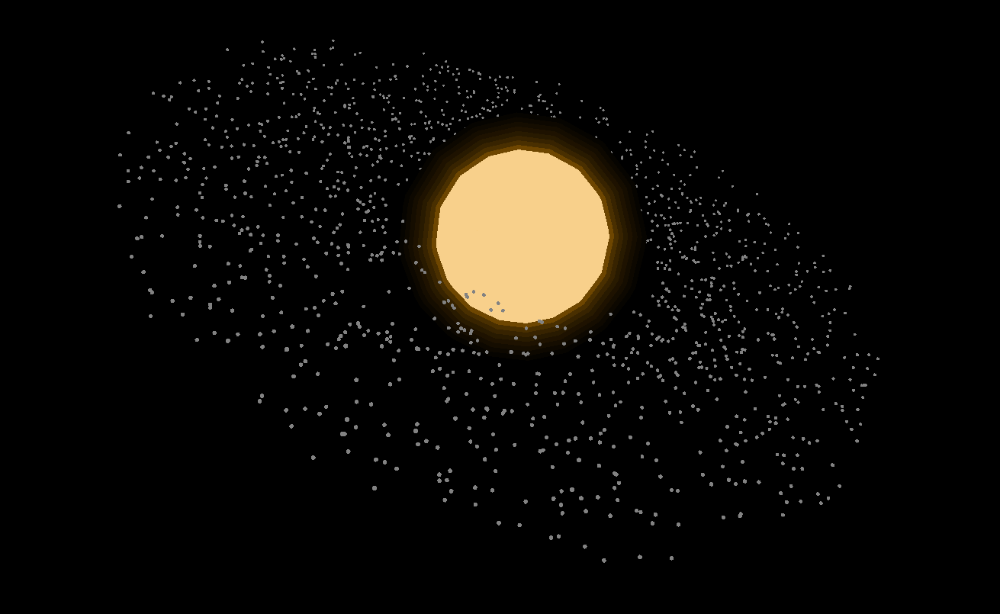
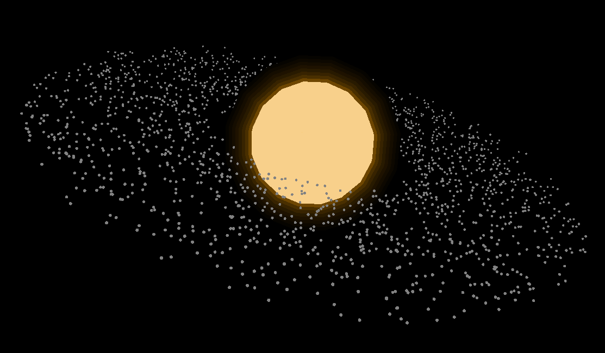
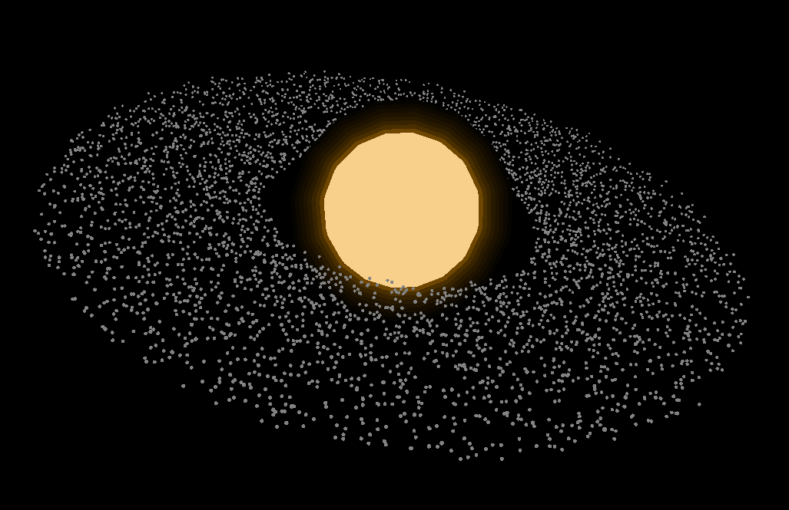

Planetary Accretion Disk
A C++ Physics Engine and Barnes-Hut simulation from scratch demonstrates the planetary accretion disk.
Why I do this project?
So the inspiration started after I finished the "The Three-body problem" novel written by Liu Cixin. I was amazed that the book refers to many familiar terms such as Genetic Algorithms, John von Neumann's computer architecture, String theory. Talk about the book, although it has sucessfully showcased a science-fiction world where many macro physics theory are existed and in use ( I am really satisfied with those concepts, hopefully in the near future humans can perform the dimension-folding), the storyline is something loss in the charater background, make me exhausted. I gonna start the second book "Dark Forest" soon, to see what is next for the human beings on Earth.
About the project
I choose to start this from scratch with my familiar language C++ and a new graphics library "Raylib". Honestly, the Raylib is insanely simple far from the SFML library that I used in previous projects where I got troubles in get the Fonts, to many declare just to display text. I heard about the heavy, professional OpenGL for 3D project, but that's might be something far in the future.
I belive that implementing the Barnes-Hut algorithm from scratch is a fun way to practice tree data structure in DSA again. The Quadtree (in 2d) or OcTree(in 3d) have the shape like M Tree, a node have multiple nodes while the parent is left empty because its particles are assigned smaller in its children (this is just my thoughs and maynot be correct, feel free to correct me :>).
Results
About the visualization of the results, for me, those are good looking and satisfy my imagination when starting the projects. However, the more important aspecs like the performance and optimization are still confused to me.
Theoretically, the program is optimized to O(N.logN), for the max N I have tested so far is 5000, so big O gonna approximately bellow 19000. Thats extremely small comparing to 5000^2 ( ~ 25 mil).
Even so, I got very low FPS for all experiments, around 10-20 FPS (N = 2000) down to 5 FPS (N = 5000). I can understand that I am only working with the algorithm itself, not the graphical performance.
One more thing could be the problem is that my laptop don't have a GPU ( or not if I optimized well).
In the end, This project brings me joy and nostagia about those physics, DSA concepts that I have learned in past few years.
After this one, I intend to continue with other physical simulation and exihit the art make from just simple rules.
Some Images

3D demo with 1500 particles
3D demo with 2000 particles.
3D demo with 5000 particles